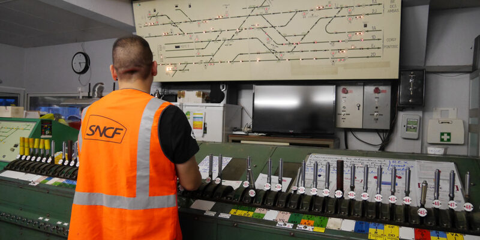
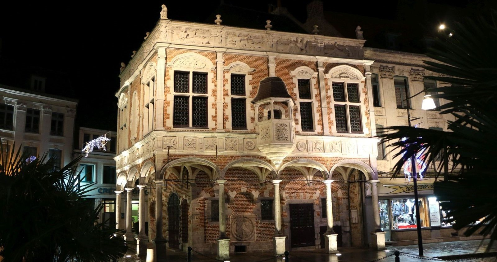
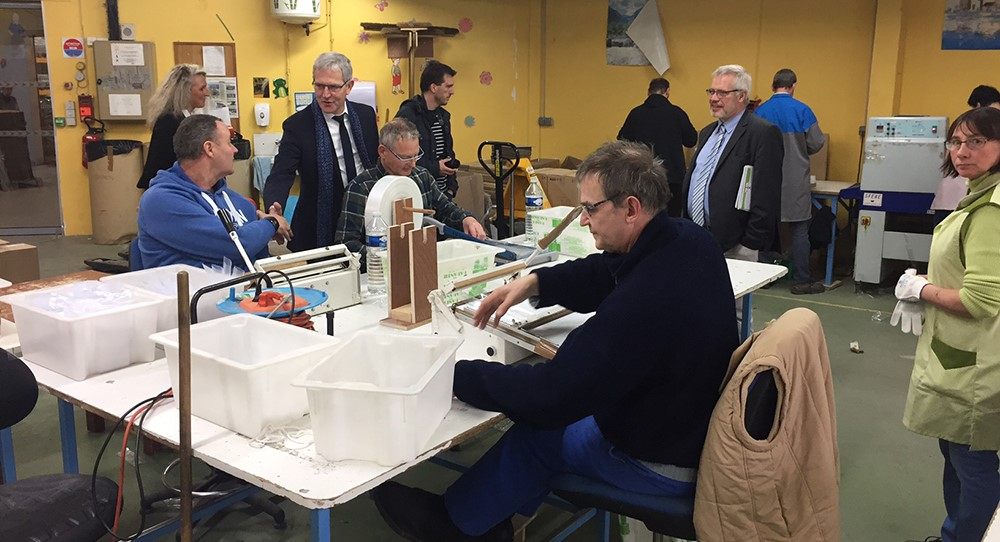

Mad Skills
0%
HTML 5

0%
CSS 3

0%
JAVASCRIPT

0%
WORDPRESS

Expériences Professionnelles
-
SANEF
Agent administratif et d'exploitation (Informations Trafic et Tunnels)
Senlis (60)
2009-2020
-
SNCF
Aiguilleur
Lens (62), Béthune (62), Pont à Vendin (62)
2007-2008
 -
CFPPA - Lycée Agricole Charles Naveaux
Responsable de formation - Formateur
Sains du Nord (59)
2006-2007
-
Collèges et Lycées divers
Assistant d'éducation
Béthune (62), Norrent Fontes (62)
2006
-
Collège Villars
Enseignant
Denain (59)
2006
-
Arcelor Mittal
Exploitant poches
Dunkerque (59)
1999-2004
Stages
-
Office de Tourisme d'Aire sur la Lys
Stagiaire
Aire sur la Lys (62)
2004-2009
 -
Communauté de Communes Artois Flandres
Stagiaire
Isbergues (62)
2003-2004

-
Centre d'Aide par le Travail (ESAT)
Stagiaire
Isbergues (62)
1998-1999

FORMATIONS
2020-2021
Validation des Acquis de l'Expérience
VAE
Brevet de Technicien Supérieur «Assistant de Direction» (BAC+2)
Gestion d'agenda. Réception d'appels téléphoniques. Rédaction de comptes rendus. Relais de communication interne/externe.
2020-2021
LA MANU, école des métiers
du numérique de Noyon
Titre Professionnel «Développeur web et web mobile» (RNCP 31114, BAC+2, Niveau 5)
Apprentissage des fondamentaux de la communication numérique, du développement Front-End et Back-End.
2004-2005
Université d'Artois
de Béthune
Licence «Conduite de Projets en Espace Rural»
(BAC+3)
Économie et Sociologie du monde rural. Diagnostic de territoire. Management de projet.
2002-2004
Lycée Agricole Sainte Marie
d'Aire sur la Lys
Brevet de Technicien Supérieur «Services en Espace Rural» (BAC+2)
Mise en place de projets et présentation devant les élus locaux. Partenariat avec les acteurs locaux.
1999-2001
Lycée Agricole Sainte Marie
d'Aire sur la Lys
Baccalauréat «Sciences et Technologies de l'Agronomie et de l'Environnement»
Apprentissage de l'Agronomie et de l'Environnement. Mise en pratique dans une exploitation de production laitière.
1997-1999
Lycée Agricole Sainte Marie
d'Aire sur la Lys
Brevet d'Etudes Professionnelles
«Services à la personne»
Accompagnement, soins et services à la personne. Aides aux actes de la vie quotidienne.